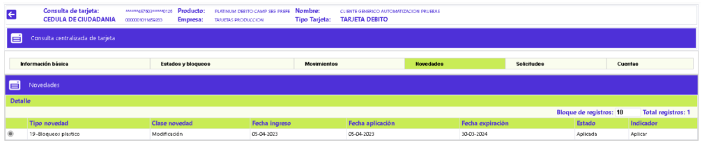

Consulta tarjeta débito
Navegando a través de este formulario se puede consultar la información relevante de la tarjeta, relacionada con: bloqueos, movimientos monetarios, novedades, solicitudes y cuentas de depósito asociadas. El formulario, por defecto, muestra lo correspondiente a Información básica, además cuenta con varios enlaces: Estados y bloqueos,Movimientos, Novedades,Solicitudes y Cuentas.
Descripción de campos
|
Nombre |
Campo que muestra el nombre y apellidos del cliente titular de la tarjeta. |
|
Número Tarjeta |
Este campo despliega, enmascarado (si aplica), el número de la tarjeta que pertenece al cliente. |
|
Fecha Vencimiento |
Campo que en formato DD-MM-AAAA, muestra la fecha en la cual vence o expira el plástico de la tarjeta. |
|
Bin, segmento, grupo |
Campos en los que se muestra la combinatoria del bin, segmento y grupo de afinidad que conforman el producto al cual pertenece la tarjeta consultada. |
|
Tipo Tarjeta |
Este campo señala si la tarjeta es: Normal principal, extendida, adicional o amparada lo que le confiere características especiales a la misma. |
|
Producto |
Este campo despliega el nombre del producto al que pertenece la tarjeta que se está consultando. |
|
Sucursal |
Campo que contiene la sucursal de radicación de la tarjeta consultada. |
|
Tarjeta anterior |
Campo que, si aplica, ilustra el número de la tarjeta anterior vinculada a la cuenta de depósitos del cliente, el cual fue reemplazado por el número actual. |
|
Fecha cuota manejo |
Campo en el que en formato DD-MM-AAAA, se muestra la fecha, más reciente, en la cual se efectuó el cobro al cliente, por concepto de cuota de manejo, de acuerdo con lo parametrizado para el producto. |
|
Agente |
Campo que contiene el nombre del funcionario asignado al cliente. |
Ciclo facturación |
Campo que contiene el ciclo de facturación asociado con la tarjeta y que determina las fechas de corte de la misma. |
Motivo Cancelación |
Campo que, si aplica, muestra el código del motivo de devolución del plástico. |
Causal cancelación |
Campo de salida, contiene información cuando la cancelación del plástico es voluntaria o por decisión del cliente y contiene la causal argumentada por éste. |
Sistema transporte |
Campo en el que, si aplica, se ilustra el código y nombre del sistema de transporte masivo habilitado o asociado a la tarjeta del cliente. |
Serial transporte |
Campo en el que, si aplica, se ilustra el código de la serie, del sistema de transporte masivo, habilitado o asociado a la tarjeta del cliente. |
Contactless |
Campo que muestra el tipo de contactless asociado a la tarjeta, que puede corresponder a: Celular SimCard, Celular Micro SD o Tarjeta. |
Tarjeta chip |
Campo que permite conocer si la tarjeta en poder del cliente corresponde a esa tecnología o no. |
Tarjeta personalizada |
Campo en el que se indica si en el plástico de la tarjeta se incluye o no el nombre del titular de la misma. |
Nombre archivo imagen |
Adicional a que, en la tarjeta personalizada aparezca el nombre del titular, es posible adicionarle una imagen a la misma con el contenido del archivo aquí identificado. |
Identificación empresa |
Opcionalmente, dentro del plástico puede incluirse el número de identificación de la empresa a la que pertenece el empleado titular de la tarjeta. |
Nombre empresa |
Al igual que el número de identificación de la empresa es opcional, es factible también, que se muestre el nombre o razón social de la misma. |
Fecha última novedad |
Campo en el que en formato DD-MM-AAAA, se muestra la fecha, más reciente, en la cual se efectuó alguna de las novedades o actualizaciones de datos relacionados con la tarjeta. |
Fecha activación |
Campo en el que en formato DD-MM-AAAA, se muestra la fecha, en la que se activó la tarjeta que actualmente está en poder del cliente. |
Fecha manejo anterior |
Campo en el que en formato DD-MM-AAAA, se muestra la fecha, inmediatamente anterior a la más reciente, en la cual se efectuó el cobro al cliente, por concepto de cuota de manejo. |
Valor manejo |
Campo que ilustra el monto más recientemente cobrado al cliente por concepto de la cuota de manejo de su tarjeta. |
Estados y bloqueos: En dos bloques se muestra la información acerca del bloqueo actual y el que ha tenido la tarjeta, relacionados con el Plástico y, la fecha en la cual estos fueron aplicados o levantados:
Descripción de campos
|
Plástico |
Campo que muestra el mas reciente bloqueo aplicado sobre el plástico propiamente dicho por ejemplo cuando se ha reportado la pérdida o robo de la misma, la cancelación voluntaria o no, bloqueos preventivos entre otros. |
|
Fecha plástico |
Este campo despliega la fecha en la cual se aplicó el bloqueo a la tarjeta o plástico. Cuando solo existe dato de fecha y el bloqueo se encuentra en blanco, se debe interpretar como la fecha en la que se levantó este tipo de bloqueo. |
Movimientos: Al activar ese enlace, el sistema muestra los diversos movimientos monetarios que afectan los saldos de las cuentas de depósito asociadas a la tarjeta, desde la que se está consultando:
Descripción de campos
Secuencia |
Campo que muestra el número único del consecutivo asignado de manera automática por el sistema a cada transacción |
|
Fecha |
Campo que muestra en formato DD-MM-AAAA, la fecha en la cual se registró o ingresó el movimiento monetario correspondiente. |
|
No Comprobante |
Campo que muestra el dato del número del comprobante correspondiente a ese movimiento monetario. |
Transacción |
Campo que muestra el código de la transacción original que identifica al movimiento monetario. |
| Moneda | Campo que muestra tanto el código como el nombre de la moneda en la que se expresa o denomina el movimiento monetario reflejado. |
Valor Inicial |
Campo que muestra el monto de cada uno de los registros del movimiento monetario reflejado. |
Detalle Movimiento: Al invocar ese enlace, el sistema despliega el siguiente bloque de datos, el cual contiene una amplia información sobre cada movimiento monetario:
Novedades: Conjunto de campos que permiten visualizar la información de las diferentes novedades que le han sido aplicadas a la tarjeta. El formulario dispone del enlace Detalle.

Descripción de campos
|
Tipo Novedad |
Campo que muestra la novedad administrativa que se le aplicó a la tarjeta. |
| Clase Novedad | Este campo indica si la acción ejecutada sobre los datos de la tarjeta, mediante la novedad aplicada se trató de: Adición, Modificación o Eliminación de información. |
Fecha Ingreso |
Campo que muestra en formato DD-MM-AAAA, la fecha en la cual se registró o ingresó la novedad en el sistema. |
Fecha Aplicación |
Este campo despliega en formato DD-MM-AAAA, la fecha en la que efectivamente se aplicó la novedad y se hizo la actualización de datos a la tarjeta. |
Fecha Expiración |
Campo que muestra en formato DD-MM-AAAA, la fecha en la cual será depurado o eliminado del sistema, el registró correspondiente a la novedad aplicada, de acuerdo con lo definido para la misma en la opción novedades administrativas. |
Estado |
Este campo indica si la novedad ya se encuentra Aplicada o está pendiente Por aplicar, lo que determina que, al consultar el detalle de la novedad, se muestren al usuario, los datos nuevos que se están actualizando o los que tenía la tarjeta anteriormente. |
Indicador |
Campo que muestra el resultado del proceso de aplicación de la novedad, y que puede ser Aplicada (cuando terminó existosamente la actualización de los datos), No aplicar (si se ha determinado que la actualización de los datos no se debe hacer) o Error (cuando durante el proceso de aplicación se ha presentado algún tipo de validación o falla que no ha permitido finalizar exitosamente la acción). |
Detalle: Al invocar ese enlace, de acuerdo con cada tipo de novedad, el formulario muestra la información completa de la misma. Cuando el estado de la novedad sea 'Por aplicar' el detalle de la novedad mostrará los datos que se están actualizando para la tarjeta; si el estado es 'Aplicada' el detalle desplegará los datos que la tarjeta tenía antes de aplicarle la novedad.
Solicitudes: Conjunto de campos que permite consultar la información de las diferentes solicitudes hechas por el cliente y relacionadas con la tarjeta, permitiéndole conocer el estado y etapa actuales asociados a cada una de ellas. El formulario contiene el enlace Detalle:
Descripción De Campos
|
Secuencia |
Campo que muestra el número consecutivo asignado de manera automática por el sistema a cada una de las solicitudes ingresadas. |
| Tipo Solicitud | Este campo indica la clase de solicitud efectuada por el cliente y asociada con la secuencia anterior. |
Fecha Ingreso |
Campo que muestra en formato DD-MM-AAAA, la fecha en la cual se registró o ingresó la novedad en el sistema. |
Etapa / Estado |
Campo que muestra de acuerdo con lo parametrizado para el tipo de solicitud asociada al producto, el código y nombre de la etapa en la cual se encuentra actualmente dicha solicitud. |
Anexo |
Campo que ilustra si para la gestión de la solicitud le fue requerido algún soporte al cliente |
Fin Tramite |
Campo que muestra Si o No, ilustrando si la solicitud ya terminó su trámite o por el contrario continúa aún en proceso. |
Detalle: Al invocar este enlace, el sistema despliega un wizard de varios pasos, dependiendo del tipo de solicitud, dentro de los cuales se muestra la información completa de la solicitud.
Cuentas: Al activar ese enlace se despliega un bloque con la relación de las distintas cuentas de depósitos, a las que la tarjeta, desde la cual se está consultando, puede tener acceso y realizar utilizaciones con la misma. El formulario dispone de los enlaces: Cambio categoría cuenta, Eliminar y Adicionar:
|
Número cuenta |
Campo que muestra el número de cada una de las cuentas de depósito asociadas o vinculadas a la tarjeta desde la que se está realizando la consulta. |
| Tipo Cuenta | Este campo indica, para cada registro, si corresponde a una cuenta corriente o a una cuenta de ahorros. |
Moneda |
Campo que muestra el código de la moneda en la que se denomina o expresan los movimientos o saldos de dichas cuentas de depósito. |
Secuencia de cuenta |
Este campo aplica o tiene relevancia para cuando una misma tarjeta tiene acceso o está vinculada a varias cuentas de depósito, e indica la jerarquía entre ellas, respecto de la manera en la que el sistema debe afectar sus saldos al momento de ingresar una utilización. |
Código estado de cuenta |
El dato numérico de este campo indica si la cuenta se encuentra: Activa, Inactiva, Embargada, etc. |
Comisión |
Campo que ilustra el valor porcentual de la comisión pactada por utilización de la tarjeta. |
Manejo |
Campo en el que se muestra la periodicidad de cobro de la cuota de manejo. |
Jurídica |
Campo que permite identificar con un 1 si la tarjeta es asignada a persona jurídica. |
Producto cuenta |
Campo en el que se muestra el código asignado a la cuenta en la definición de productos débito. |
Fecha estado de cuenta |
Campo que muestra en formato DD-MM-AAAA, la fecha más reciente en la que se actualizó el dato del campo Código estado de cuenta. |
Adicionar (- Cuenta): Al invocar ese enlace se muestra el siguiente formulario:
|
Cuenta |
Campo obligatorio que en máximo 19 caracteres permite digitar el número de la nueva cuenta de depósitos a asociar a la tarjeta desde la que se está gestionando esta novedad. |
| Tipo de a cuenta Debitar | Campo que posee lista de valores tipo combo, de la cual se debe seleccionar entre los distintos tipos o clases de cuentas de depósito, a las que se les puede vincular la tarjeta para realizar utilizaciones con la misma. |